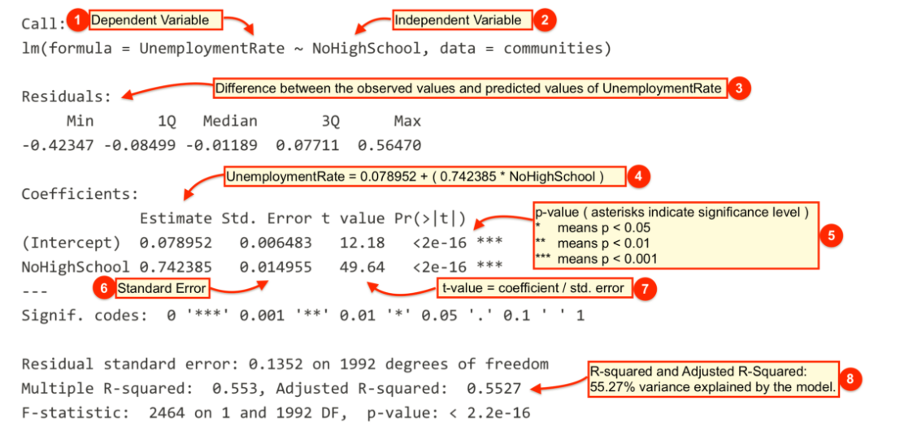

Chapter 1 Linear Regression
1.1 Learning objectives
In this part, we cover the linear regression model. The linear model is commonly applied and versatile enough to be suitable for most tasks. We will use a dataset from the 1990 US Census which provides demographic and socio-economic data. The dataset includes observations from 1994 communities with each observation identified by a state and communityname variable. Before we start analysing, we load the dataset and do some pre-processing.
We load a part of the census data using the read.csv() function and confirm that the state and communityname are present in each dataset. The dataset is named communities.csv and is included on your memory stick. You can copy it over to your computer and set the working directory in R to work in that folder. Alternatively, you can download the dataset here.
We assign the dataset to an object that resides in working memory. Let’s call that object communities.
The stringsAsFactors argument stops R from converting text variables into categorical variables called factors in R. The dataset is rather large and we are only interested in a few variables. In the following, we introduce a new package for data manipulation.
1.1.1 Dplyr package
The dplyr package is useful for data manipulation. We install it by running install.packages("dplyr"). We only install a package once. To update the package, run update.packages("dplyr"). Loading multiple packages can cause clashes if packages include functions with similar names. In order to avoid such clashes, we will not load the package into the session with the library() function but instead call dplyr functions directly from the package like so: dplyr::function_name(). We demonstrate this as we go along.
1.1.1.1 The dplyr::select() function
Since our dataset has more columns (variables) than we need, let’s select only a few and rename them using more meaningful names. An easy way to accomplish this is using dplyr::select(). The function allows us to select the columns we need and rename them at the same time.
communities <- dplyr::select(
communities,
state,
community = communityname,
UnemploymentRate = PctUnemployed,
NoHighSchool = PctNotHSGrad,
white = racePctWhite)Note that the first argument in dplyr::select is the name of the dataset (communities in our case). The remaining arguments are the variables that we keep. The first variable state has a meaningful name and does not need to be renamed. The second variable communityname could be shorter and we rename it to community. Similarly, we rename PctUnemployed, PctNotHSGrad and racePctWhite.
1.1.2 Visualising a relationship b/w two continuous variables
A good way gauge whether two variables that both contiunous are related is to draw a scatter plot. We do so for the unemployment rate and for the lack of high shool education. Both variables are measured in percent, where NoHighSchool is the percentage of adults without high school education in a community.
plot(
x = communities$NoHighSchool,
y = communities$UnemploymentRate,
xlab = "Proportion of adults without high school education",
ylab = "Unemployment rate",
bty = "n",
pch = 16,
col = "gray")Use ?plot() or google R plot for a description of the arguments.
It looks like communities with lower education levels suffer higher unemployment. To assess (1) whether that relationship is systematic (not a chance finding) and (2) what the magnitude of the relationship is, we estimate a linear model with the lm() function. The two arguments we need to provide to the function are described below.
| Argument | Description |
|---|---|
formula |
The formula describes the relationship between the dependent and independent variables, for example dependent.variable ~ independent.variable In our case, we’d like to model the relationship using the formula: UnemploymentRate ~ NoHighSchool |
data |
This is simply the name of the dataset that contains the variable of interest. In our case, this is the merged dataset called communities. |
For more information on the lm() function, run ?lm(). Let’s run the linear model.
The lm() function modele the relationship between UnemploymentRate and NoHighSchool and we’ve assigned the estimated model to the object m1. We can use the summary() function on m1 for the key results.
Call:
lm(formula = UnemploymentRate ~ NoHighSchool, data = communities)
Residuals:
Min 1Q Median 3Q Max
-0.42347 -0.08499 -0.01189 0.07711 0.56470
Coefficients:
Estimate Std. Error t value Pr(>|t|)
(Intercept) 0.078952 0.006483 12.18 <2e-16 ***
NoHighSchool 0.742385 0.014955 49.64 <2e-16 ***
---
Signif. codes: 0 '***' 0.001 '**' 0.01 '*' 0.05 '.' 0.1 ' ' 1
Residual standard error: 0.1352 on 1992 degrees of freedom
Multiple R-squared: 0.553, Adjusted R-squared: 0.5527
F-statistic: 2464 on 1 and 1992 DF, p-value: < 2.2e-16The output from lm() might seem overwhelming at first so let’s break it down one item at a time.

| # | Description |
|---|---|
 |
The dependent variable, also sometimes called the outcome variable. We are trying to model the effects of NoHighSchool on UnemploymentRate so UnemploymentRate is the dependent variable. |
 |
The independent variable or the predictor variable. In our example, NoHighSchool is the independent variable. |
| The differences between the observed values and the predicted values are called residuals. | |
 |
The coefficients for the intercept and the independent variables. Using the coefficients we can write down the relationship between the dependent and the independent variables as: UnemploymentRate = 0.078952 + ( 0.7423853 * NoHighSchool ) This tells us that for each unit increase in the variable NoHighSchool, the UnemploymentRate increases by 0.7423853. |
 |
The p-value of the model. Recall that according to the null hypotheses, the coefficient of interest is zero. The p-value tells us whether can can reject the null hypotheses or not. |
 |
The standard error estimates the standard deviation of the coefficients in our model. We can think of the standard error as the measure of precision for the estimated coefficients. |
| The t statistic is obtained by dividing the coefficients by the standard error. | |
 |
The R-squared and adjusted R-squared tell us how much of the variance in our model is accounted for by the independent variable. The adjusted R-squared is always smaller than R-squared as it takes into account the number of independent variables and degrees of freedom. |
1.1.2.1 Predictions
We are often interested in predicting values for the dependent variable based on a values for the independent variable. For instance, what is the predicted unemployment rate given 50 percent of the adults without high school education? We use the predict() function to assess this. Instead of making the forecaset for the case were 50 percent do not have high school education, we make a prediction for each level of low education.
We create a sequence of values for low education using the sequence function first seq(). We create 100 values from 0 to 1.
We now define a dataset where the variable names are called exactly the same as in our regression model m1. Let’s check the name of the independent variable in m1 by calling the object. We then copy and paste the variable name to make sure that we don’t have a typo in our code.
Call:
lm(formula = UnemploymentRate ~ NoHighSchool, data = communities)
Coefficients:
(Intercept) NoHighSchool
0.07895 0.74239 We now use the predict() function to make a prediction for each of the 100 edu values.
We create a new dataset including the education values from 0 to 1 and the predictions. In the predict() function, we set the argument se.fit to TRUE. This returns a standard error for our prediction and lets us quantify our uncertainty. IN the dataset, we will save the point estimates (the best quesses) as well as values for the upper and lower bound of our confidence intervals
out <- data.frame( NoHighSchool = edu,
predicted_unemployment_rate = preds$fit,
lb = preds$fit - 1.96 * preds$se.fit,
ub = preds$fit + 1.96 * preds$se.fit)Let’s inspect the first ten values of our data.
NoHighSchool predicted_unemployment_rate lb ub
1 0.00000000 0.07895202 0.06624469 0.09165936
2 0.01010101 0.08645087 0.07400458 0.09889715
3 0.02020202 0.09394971 0.08176286 0.10613655
4 0.03030303 0.10144855 0.08951944 0.11337766
5 0.04040404 0.10894739 0.09727420 0.12062058
6 0.05050505 0.11644623 0.10502702 0.12786544We now add our prediction to the scatter plot.
lines( x = edu, y = out$predicted_unemployment_rate, lwd = 2)
lines( x = edu, y = out$lb, lwd = 2, lty = "dashed")
lines( x = edu, y = out$ub, lwd = 2, lty = "dashed")As the plot shows, the precision of our estimates is quite good (the 95 percent confidence interval is narrow).
Returning to our example, are there other variables that might explain unemployment rates in our communities dataset? For example, is unemployment rate higher or lower in communities with different levels of minority population?
We first create a new variable called Minority by subtracting the percent of White population from 1. Alternatively, we could have added up the percent of Black, Hispanic and Asians to get the percentage of minority population since our census data also has those variables.
Next we fit a linear model using Minority as the independent variable.
Call:
lm(formula = UnemploymentRate ~ Minority, data = communities)
Residuals:
Min 1Q Median 3Q Max
-0.45521 -0.12189 -0.02369 0.10162 0.68203
Coefficients:
Estimate Std. Error t value Pr(>|t|)
(Intercept) 0.257948 0.005506 46.85 <2e-16 ***
Minority 0.428702 0.015883 26.99 <2e-16 ***
---
Signif. codes: 0 '***' 0.001 '**' 0.01 '*' 0.05 '.' 0.1 ' ' 1
Residual standard error: 0.173 on 1992 degrees of freedom
Multiple R-squared: 0.2678, Adjusted R-squared: 0.2674
F-statistic: 728.5 on 1 and 1992 DF, p-value: < 2.2e-16Now let’s see how this model compares to our first model. We can show regression line from model2 just like we did with our first model.
# plot
plot(communities$Minority, communities$UnemploymentRate,
xlab = "Minority population rate",
ylab = "Unemployment rate",
bty = "n",
pch = 16,
col = "gray")
# predict outcomes
minority.seq <- seq(from = 0, to = 1, length.out = 100)
preds2 <- predict(m2, newdata = data.frame(Minority = minority.seq), se.fit = TRUE)
out2 <- data.frame(Minority = minority.seq,
predicted_unemployment_rate = preds2$fit,
lb = preds2$fit - 1.96 * preds2$se.fit,
ub = preds2$fit + 1.96 * preds2$se.fit)
lines( x = minority.seq, y = out2$predicted_unemployment_rate, lwd = 2)
lines( x = minority.seq, y = out2$lb, lwd = 2, lty = "dashed")
lines( x = minority.seq, y = out2$ub, lwd = 2, lty = "dashed")Does m2 offer a better fit than m1? Maybe we can answer that question by looking at the regression tables instead. Let’s print the two models side-by-side in a single table with the screenreg() function contained in the texreg package.
Let’s install texreg first like so:
We now compare the models using the texreg() function like so:
======================================
Model 1 Model 2
--------------------------------------
(Intercept) 0.08 *** 0.26 ***
(0.01) (0.01)
NoHighSchool 0.74 ***
(0.01)
Minority 0.43 ***
(0.02)
--------------------------------------
R^2 0.55 0.27
Adj. R^2 0.55 0.27
Num. obs. 1994 1994
RMSE 0.14 0.17
======================================
*** p < 0.001, ** p < 0.01, * p < 0.05Contemplate the output from the table for a moment. Slope coefficients (everything except the intercept) are always the effect of a 1-unit change of the indepedent variable on the dependent variable in the units of the dependent variable. Both our independent variables are proportions. Hence a 1-unit change covers the entire ranges of our independent variables (0 to 1). Model 1 suggests that the unemployment rate is 74 percent larger in a district where no one has a high school degree than in a district where everone has a high school degree. Similarly, model 2 suggests that in a district where everone has a minority background (making everyone is a minority an oxymoron), the unemployment rate 43 percent higher than in a community where no one is. Please note that these predictive models should not be mistaken to capture causal relationships.
These are the two plots that we created earlier. In the model using NoHighSchool the points which are the actual unemployment rates are much closer to our prediction (the regression line) than in the model using Minority. This means that variation in NoHighSchool better explains variation in UnemploymentRate than variation in Minority. This is captured in the R^2 and Adj. R^2. Both R^2 and Adj. R^2 are measues of model fit. The difference between them is that Adj. R^2 is a measure that penalises model complexity (more variables). In models with more than one independent variable, we rely on Adj. R^2 and in models with one independent variable, we use R^2, i.e. here we would use R^2.